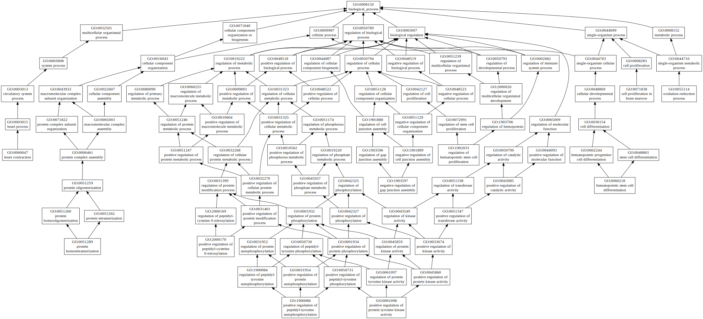
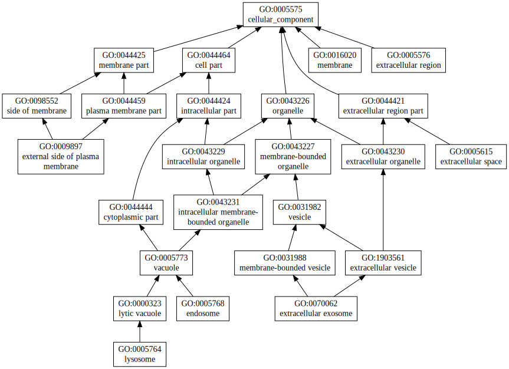

|
| Download full result of the above consensus prediction. |
| Click the graph to show a high resolution version. |
| (a) | CscoreGO is the confidence score of predicted GO terms. CscoreGO values range in between [0-1]; where a higher value indicates a better confidence in predicting the function using the template. |
| (b) | The graph shows the predicted terms within the Gene Ontology hierachy for Molecular Function. Confidently predicted terms are color coded by CscoreGO: |
| | [0.13,0.5) | [0.5,0.6) | [0.6,0.7) | [0.7,0.8) | [0.8,0.9) | [0.9,1.0] |
|
|
|

|
| GO term | CscoreGO | Name |
| GO:2000170 | 0.01 | positive regulation of peptidyl-cysteine S-nitrosylation |
| GO:1903597 | 0.01 | negative regulation of gap junction assembly |
| GO:1902033 | 0.01 | regulation of hematopoietic stem cell proliferation |
| GO:1900086 | 0.01 | positive regulation of peptidyl-tyrosine autophosphorylation |
| GO:0071838 | 0.01 | cell proliferation in bone marrow |
| GO:0061098 | 0.01 | positive regulation of protein tyrosine kinase activity |
| GO:0060218 | 0.01 | hematopoietic stem cell differentiation |
| GO:0060047 | 0.01 | heart contraction |
| GO:0055114 | 0.01 | oxidation-reduction process |
| GO:0051289 | 0.01 | protein homotetramerization |
| Download full result of the above consensus prediction. |
| Click the graph to show a high resolution version. |
| (a) | CscoreGO is the confidence score of predicted GO terms. CscoreGO values range in between [0-1]; where a higher value indicates a better confidence in predicting the function using the template. |
| (b) | The graph shows the predicted terms within the Gene Ontology hierachy for Biological Process. Confidently predicted terms are color coded by CscoreGO: |
| | [0.08,0.5) | [0.5,0.6) | [0.6,0.7) | [0.7,0.8) | [0.8,0.9) | [0.9,1.0] |
|
|
|

|
| Download full result of the above consensus prediction. |
| Click the graph to show a high resolution version. |
| (a) | CscoreGO is the confidence score of predicted GO terms. CscoreGO values range in between [0-1]; where a higher value indicates a better confidence in predicting the function using the template. |
| (b) | The graph shows the predicted terms within the Gene Ontology hierachy for Cellular Component. Confidently predicted terms are color coded by CscoreGO: |
| | [0.14,0.5) | [0.5,0.6) | [0.6,0.7) | [0.7,0.8) | [0.8,0.9) | [0.9,1.0] |
|
|
|